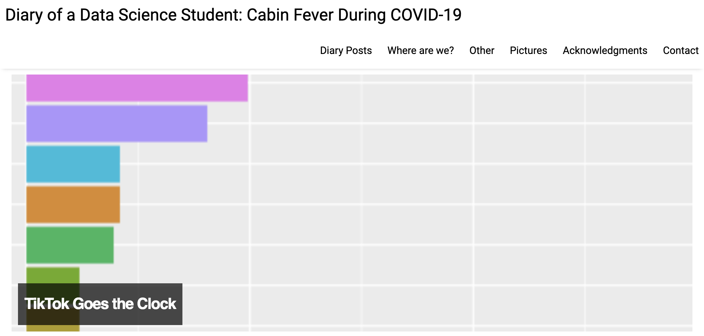

Data collection & analysis using Google Calendar
Resources for instructors for Albert Y. Kim and Johanna Hardin’s Journal of Statistics and Data Science Education paper:
“Playing the whole game”: A data collection and analysis exercise with Google Calendar.
Abstract: We provide a computational exercise suitable for early introduction in an undergraduate statistics or data science course that allows students to ‘play the whole game’ of data science: performing both data collection and data analysis. While many teaching resources exist for data analysis, such resources are not as abundant for data collection given the inherent difficulty of the task. Our proposed exercise centers around student use of Google Calendar to collect data with the goal of answering the question ‘How do I spend my time?’ On the one hand, the exercise involves answering a question with near universal appeal, but on the other hand, the data collection mechanism is not beyond the reach of a typical undergraduate student. A further benefit of the exercise is that it provides an opportunity for discussions on ethical questions and considerations that data providers and data analysts face in today’s age of large-scale internet-based data collection.
Learning Goals
The learning goals of this assignment relate to:
- Data Collection
- Experience creating measurable data observations (e.g., how is “one day” measured, or what defines “studying”).
- Address data collection constraints due to limits in technological capacity and human behavior.
- Data Ethics
- Practice the ethical and legal responsibilities of those collecting, storing, and analyzing data.
- Decide limits for personal privacy.
- Deliberate on the trade-offs between research results and privacy.
- “Playing the whole game”
- Tie together data collection, analysis, ethics, and communication components.
- Iterate between and within the components of the “whole game.”
Resources
Examples
Both Albert and Johanna’s versions of the assignment assumed basic familiarity with R and RStudio as well as the ggplot2 and dplyr packages.
- Previews of the assignment as given to students in
- A
.zipfile of all files necessary for both assignments: calendar.zip - Both assignments give students some variation of the starter code below:
Screencast demo
Here is a 6m56s YouTube screencast demonstrating how to:
- Log time data in Google Calendar
- Export the calendar data to
.icsfile format - Import the
.icsin R using theicalpackage
Examples from the community
Prof. Katharine Correia at Amherst College extended our original idea and used it for her students to create data diaries during the COVID-19 quarantine period of Spring 2020. Some examples of her students’ amazing work can be found here.
